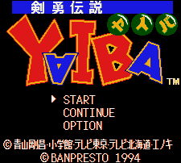

Yaiba - SNES Games

Controls
- A button: [not used?]
- B button: Jump
- X button: Block?
- Y button: Attack
- L button: Call on Friend
- R button: [not used?]
- Start: Inventory
- Select: [not used]
You can call on your friends to help you out; your friends seem to be a girl, a tiger, and a
vulture. Beyond that, I don't know what the goal of the game is.
Anime Video Game Resource Center © 1998 by Luis A. Cruz